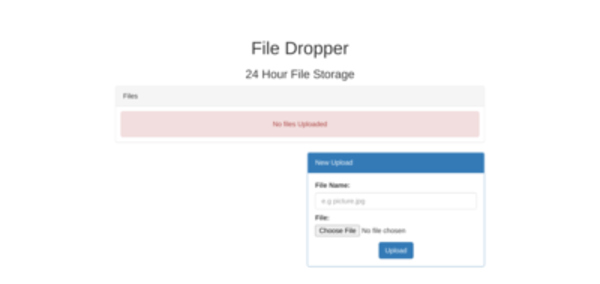

Upon loading the site, you are presented with a file upload screen:
As usual, the first thing I do when starting a CTF is look around the site with ffuf.
ffuf -w common.txt -u https://host/FUZZ
So everything but the index page is forbidden... I try fuzzing the the directory "Y2FuIHlvdSByZWNvbj8/", which is base64 for "can you recon??" since it's the name of the challenge but I found nothing.
At this point I begin trying to upload files. First I upload a basic php webshell but php files are not accepted. I then tried uploading a php webshell encoded into the IDAT chunks (Encoding Web Shells in PNG IDAT chunks), and while I was able to upload the file I didn't know where the file was.
Based on the name of the challenge, I figured recon would be important, so I fuzzed with bigger wordlists, but this didn't help. Then I tried making the name "../file" and upon checking the main directory I found my uploaded files.
I spend some time trying various ways to upload a php webshell, but can't figure it out at first, so I look at the hints on hacker101.
"How can you abuse the site to disable or rewrite the Apache rule?"
This gets me thinking about .htaccess files. What if I can upload "../.htaccess" and replace the current one. I try it with this piece of code (Utilizing .htaccess for exploitation purposes)
I later find out this did indeed overwrite the .htaccess file, but I didn't actually spend a lot of time researching this and getting the file right as I came upon a quicker solution, and I didn't know at the time that it worked because everything was still forbidden.
Then after some more reading on file upload vulnerabilities and some sleep, I tried some different tricks for uploading php files (.PHP, .php2, etc) and found that .phtml executed php.
So I upload a php webshell with the name "../shell.phtml" and run "shell_exec("ls -a")" for the following output:
If I cat .htaccess, I see that I did indeed modify the file, so this is probably the intended way to solve the challenge. I looked around a bit and found that index.php includes Flag.php from the parent directory. Now I "ls .. -a" to view the parent directory, and flags.txt has all three flags.